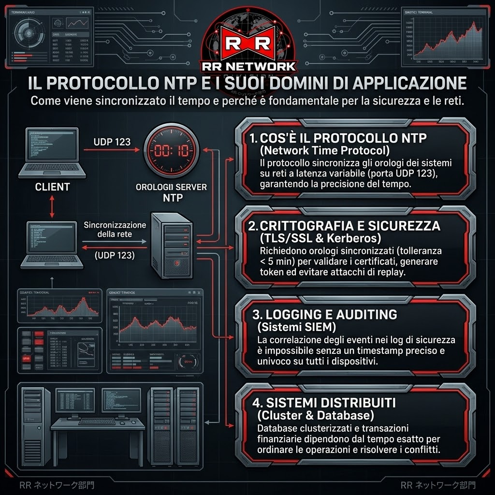
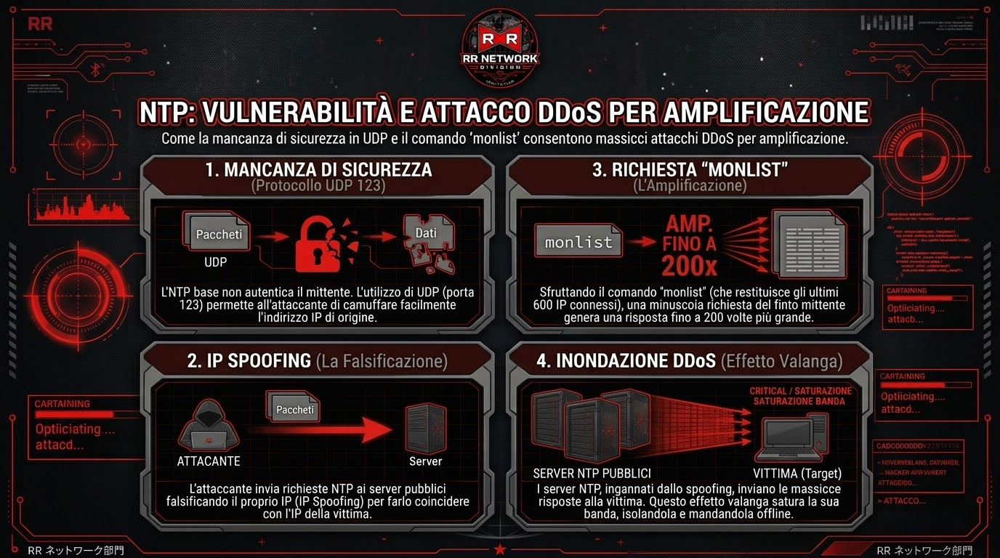
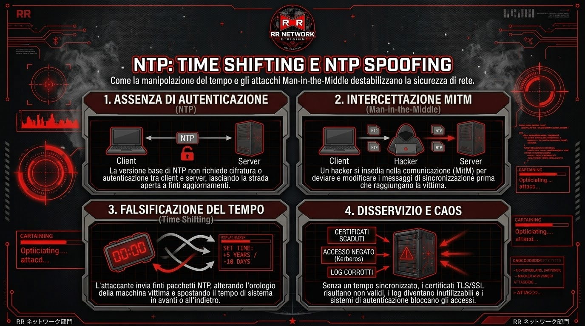

Il Network Time Protocol (NTP) è uno dei protocolli più vecchi di Internet, operante sulla porta UDP 123, progettato per sincronizzare gli orologi dei sistemi informatici su reti a latenza variabile.
L'NTP è un pilastro invisibile ma fondamentale dell'infrastruttura IT moderna. I suoi principali ambiti di utilizzo includono:

Il protocollo NTP è nato senza meccanismi di sicurezza integrati e, operando su UDP (che non verifica l'identità del mittente), risulta esposto a diverse tipologie di attacchi informatici:
Il più noto è l'attacco DDoS per amplificazione. Nelle versioni meno recenti dei server NTP è attivo di default un comando chiamato monlist, che restituisce la lista degli ultimi seicento dispositivi connessi. Un attaccante sfrutta questa funzione inviando richieste a vari server pubblici, falsificando però l'indirizzo IP di provenienza per farlo coincidere con quello della vittima (tecnica nota come IP spoofing). I server, credendo di rispondere alla vittima, le inviano un'enorme quantità di dati, fino a duecento volte il peso della richiesta originale. Questo effetto valanga satura completamente la banda del bersaglio, isolandolo dalla rete.

Un'altra minaccia insidiosa è la manipolazione del tempo, conosciuta come Time Shifting o NTP Spoofing. Dato che nella sua versione base il protocollo non richiede alcuna autenticazione tra client e server, un hacker può intromettersi nella comunicazione (attacco Man-in-the-Middle) e inviare finti pacchetti di aggiornamento. Spostando l'orologio della macchina colpita avanti o indietro nel tempo, l'attaccante riesce a ingannare i sistemi di sicurezza: i certificati dei siti web risultano improvvisamente scaduti e i sistemi di login aziendali bloccano gli accessi ritenendoli invalidi.

Infine, esiste il blocco della sincronizzazione tramite lo spoofing dei messaggi Kiss-o'-Death. Di base, questi sono comandi di controllo legittimi che i server usano per chiedere ai dispositivi connessi di rallentare le richieste in caso di troppo traffico. L'hacker crea finti messaggi di questo tipo e li invia al client fingendosi il server ufficiale. Il dispositivo vittima riceve l'ordine e, obbedendo al finto comando, smette di aggiornare l'orario o si disconnette del tutto. Senza ricevere più aggiornamenti, l'orologio interno si desincronizza gradualmente, causando malfunzionamenti a catena su tutti i servizi di rete che dipendono dalla precisione temporale.